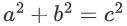
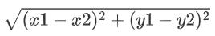

题目翻译
有一个三角形，如果是直角三角形输出 RIGHT。否则，如果可以将一个点挪动 1 的距离，那么输出 ALMOST 。若都不满足，则输出 NEITHER 。
题目分析
勾股定理：
距离公式：
那么可以根据给的坐标点，算出三个线段的长，最后用勾股定理公式判断一下。
那么判断勾股定理代码为：
bool check(int a,int b,int c)
{
//模拟冒泡排序，将abc排成从小到大排序。
if(a>b)swap(a,b);
if(b>c)swap(b,c);
return a+b==c&&a>0&&b>0&&c>0;//判断，3条线段是否构成直角，并且长度大于0
}
因为如果求距离时开根会影响精度，那么长度不开根，勾股定理公式也不用平方了。
由于C++没有Python那种 x**2 的高科技，那么就手写一波算平方。
int mi(int a)
{
return a*a;
}
简简单单三行代码小白都会叫手写?
然后我们就可以写出算每条线段的长度了。
if(check(mi(x[1]-x[2])+mi(y[1]-y[2]),mi(x[2]-x[3])+mi(y[2]-y[3]),mi(x[1]-x[3])+mi(y[1]-y[3]))){puts("RIGHT");return 0;}
if(check(mi((x[1]+1)-x[2])+mi(y[1]-y[2]),mi(x[2]-x[3])+mi(y[2]-y[3]),mi((x[1]+1)-x[3])+mi(y[1]-y[3]))){puts("ALMOST");return 0;}
if(check(mi((x[1]-1)-x[2])+mi(y[1]-y[2]),mi(x[2]-x[3])+mi(y[2]-y[3]),mi((x[1]-1)-x[3])+mi(y[1]-y[3]))){puts("ALMOST");return 0;}
if(check(mi(x[1]-x[2])+mi((y[1]+1)-y[2]),mi(x[2]-x[3])+mi(y[2]-y[3]),mi(x[1]-x[3])+mi((y[1]+1)-y[3]))){puts("ALMOST");return 0;}
if(check(mi(x[1]-x[2])+mi((y[1]-1)-y[2]),mi(x[2]-x[3])+mi(y[2]-y[3]),mi(x[1]-x[3])+mi((y[1]-1)-y[3]))){puts("ALMOST");return 0;}
if(check(mi(x[1]-(x[2]+1))+mi(y[1]-y[2]),mi((x[2]+1)-x[3])+mi(y[2]-y[3]),mi(x[1]-x[3])+mi(y[1]-y[3]))){puts("ALMOST");return 0;}
if(check(mi(x[1]-(x[2]-1))+mi(y[1]-y[2]),mi((x[2]-1)-x[3])+mi(y[2]-y[3]),mi(x[1]-x[3])+mi(y[1]-y[3]))){puts("ALMOST");return 0;}
if(check(mi(x[1]-x[2])+mi(y[1]-(y[2]+1)),mi(x[2]-x[3])+mi((y[2]+1)-y[3]),mi(x[1]-x[3])+mi(y[1]-y[3]))){puts("ALMOST");return 0;}
if(check(mi(x[1]-x[2])+mi(y[1]-(y[2]-1)),mi(x[2]-x[3])+mi((y[2]-1)-y[3]),mi(x[1]-x[3])+mi(y[1]-y[3]))){puts("ALMOST");return 0;}
if(check(mi(x[1]-x[2])+mi(y[1]-y[2]),mi(x[2]-(x[3]+1))+mi(y[2]-y[3]),mi(x[1]-(x[3]+1))+mi(y[1]-y[3]))){puts("ALMOST");return 0;}
if(check(mi(x[1]-x[2])+mi(y[1]-y[2]),mi(x[2]-(x[3]-1))+mi(y[2]-y[3]),mi(x[1]-(x[3]-1))+mi(y[1]-y[3]))){puts("ALMOST");return 0;}
if(check(mi(x[1]-x[2])+mi(y[1]-y[2]),mi(x[2]-x[3])+mi(y[2]-(y[3]+1)),mi(x[1]-x[3])+mi(y[1]-(y[3]+1)))){puts("ALMOST");return 0;}
if(check(mi(x[1]-x[2])+mi(y[1]-y[2]),mi(x[2]-x[3])+mi(y[2]-(y[3]-1)),mi(x[1]-x[3])+mi(y[1]-(y[3]-1)))){puts("ALMOST");return 0;}
puts("NEITHER");
太长了，大家copy就好
大家还是要自己写的啊！杜绝ctrl+A,ctrl+C,ctrl+V！
AC代码
其实已经给出来了，全部拼到一起即可。
#include<bits/stdc++.h>
using namespace std;
bool check(int a,int b,int c)
{
if(a>b)swap(a,b);
if(b>c)swap(b,c);
return a+b==c&&a>0&&b>0&&c>0;
}
int mi(int a)
{
return a*a;
}
int x[4],y[4];
int main()
{
for(int i=1;i<=3;i++)
{
cin>>x[i]>>y[i];
}
if(check(mi(x[1]-x[2])+mi(y[1]-y[2]),mi(x[2]-x[3])+mi(y[2]-y[3]),mi(x[1]-x[3])+mi(y[1]-y[3]))){puts("RIGHT");return 0;}
if(check(mi((x[1]+1)-x[2])+mi(y[1]-y[2]),mi(x[2]-x[3])+mi(y[2]-y[3]),mi((x[1]+1)-x[3])+mi(y[1]-y[3]))){puts("ALMOST");return 0;}
if(check(mi((x[1]-1)-x[2])+mi(y[1]-y[2]),mi(x[2]-x[3])+mi(y[2]-y[3]),mi((x[1]-1)-x[3])+mi(y[1]-y[3]))){puts("ALMOST");return 0;}
if(check(mi(x[1]-x[2])+mi((y[1]+1)-y[2]),mi(x[2]-x[3])+mi(y[2]-y[3]),mi(x[1]-x[3])+mi((y[1]+1)-y[3]))){puts("ALMOST");return 0;}
if(check(mi(x[1]-x[2])+mi((y[1]-1)-y[2]),mi(x[2]-x[3])+mi(y[2]-y[3]),mi(x[1]-x[3])+mi((y[1]-1)-y[3]))){puts("ALMOST");return 0;}
if(check(mi(x[1]-(x[2]+1))+mi(y[1]-y[2]),mi((x[2]+1)-x[3])+mi(y[2]-y[3]),mi(x[1]-x[3])+mi(y[1]-y[3]))){puts("ALMOST");return 0;}
if(check(mi(x[1]-(x[2]-1))+mi(y[1]-y[2]),mi((x[2]-1)-x[3])+mi(y[2]-y[3]),mi(x[1]-x[3])+mi(y[1]-y[3]))){puts("ALMOST");return 0;}
if(check(mi(x[1]-x[2])+mi(y[1]-(y[2]+1)),mi(x[2]-x[3])+mi((y[2]+1)-y[3]),mi(x[1]-x[3])+mi(y[1]-y[3]))){puts("ALMOST");return 0;}
if(check(mi(x[1]-x[2])+mi(y[1]-(y[2]-1)),mi(x[2]-x[3])+mi((y[2]-1)-y[3]),mi(x[1]-x[3])+mi(y[1]-y[3]))){puts("ALMOST");return 0;}
if(check(mi(x[1]-x[2])+mi(y[1]-y[2]),mi(x[2]-(x[3]+1))+mi(y[2]-y[3]),mi(x[1]-(x[3]+1))+mi(y[1]-y[3]))){puts("ALMOST");return 0;}
if(check(mi(x[1]-x[2])+mi(y[1]-y[2]),mi(x[2]-(x[3]-1))+mi(y[2]-y[3]),mi(x[1]-(x[3]-1))+mi(y[1]-y[3]))){puts("ALMOST");return 0;}
if(check(mi(x[1]-x[2])+mi(y[1]-y[2]),mi(x[2]-x[3])+mi(y[2]-(y[3]+1)),mi(x[1]-x[3])+mi(y[1]-(y[3]+1)))){puts("ALMOST");return 0;}
if(check(mi(x[1]-x[2])+mi(y[1]-y[2]),mi(x[2]-x[3])+mi(y[2]-(y[3]-1)),mi(x[1]-x[3])+mi(y[1]-(y[3]-1)))){puts("ALMOST");return 0;}
puts("NEITHER");
return 0;
}